|
|
|
|
|
|
|
|
Toolchest Data graphs can display data for multiple variables, up to eight, at the same time. Data Graphs have two styles: Bar and Line.
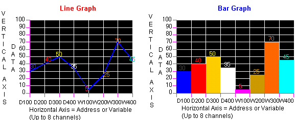
Property |
Description |
||
Name |
The data graph object's name. Whenever an object is created, a default name is generated. When renaming an object, its name must be unique within the target, must contain no more than 32 valid characters, and must follow the naming conventions. For details, see Appendix 9, Naming Conventions. |
||
Description |
Displays the description of this data graph. This property is read only. |
||
Version |
This property is read only and displays the editor version that created the part. |
||
Top |
The coordinates, in pixels, of the top-left corner of the object.
By changing these properties, the graphical object can be moved up, down, left, and right.
|
||
Left |
|||
Width |
The width/height of the data graph in pixels. For the width, enter a value between 250 and 3000. For the height, enter a value between 150 and 3000. |
||
Height |
|||
Style |
For Style, you can choose from Line or Bar. Line displays a line graph, and Bar displays a bar graph.
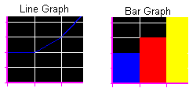 When you choose Line, click on |
||
LineColor |
Select the color of the line. |
||
BackColor |
Select the background color of the line. |
||
LineStyle |
Select the line style. |
||
LineWidth |
Select the width of the line. |
||
LineMark |
Select True or False. When True, dots appear on the graph at points wherever a data sample is taken.
|
||
LineMark Width |
Available only when LineMark is set to True. Select the pixel width for the Line Marks. |
||
AnchorAt Zero |
Available only when Style property is set to Bar. Use an anchor when you set negative data to the ValueMin and ValueMax values. See the note at the end of this section for more details. |
||
Label Channel |
Select one of the three options to determine which labels to apply to the Channel (horizontal) Axis of the graph.
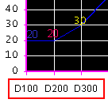
|
||
DisplayValues |
Select True to display the numeric value of each sample. The color of the numeric value is defined in the Color property under the Channel#Variable property.
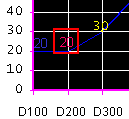 |
||
ValueMin |
Enter the minimum and maximum value to display on the data graph. Values less or greater than the number specified in these variables will not display on the graph. |
||
ValueMax |
|||
DataAxis ScaleLabels |
Select True to display the labels along the Data (vertical) Axis of the graph. 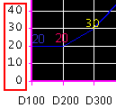 |
||
DataAxis Scale |
Select True to display the scale along the Data (vertical) Axis of the graph. 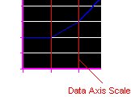 |
||
DataAxis ScaleColor |
Select the color of the Data (vertical) Axis scale. |
||
DataAxis ScaleDivisions |
Defines the number of divisions for the data axis. 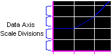 |
||
ChannelAxis Scale |
Select True to display the horizontal lines across the graph. 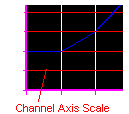 |
||
ChannelAxis ScaleColor |
Select the color of the Channel (horizontal) Axis scale. |
||
Decimals |
Enter a value from 0 to 10 to define the number of decimal places to include in the values on the graph. 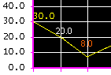 |
||
BackColor |
Select the background color of the graph and the area around it. 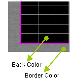 |
||
BorderColor |
|||
Font |
Select the type and size of the font for numeric values and labels that display on the graph. |
||
NumberOf Variables |
Select the number of addresses or variables to display in the graph. Enter a value between 2 and 8. Define the following properties for each channel. |
||
Channel# Variable |
Specify the address or variable to be assigned to each channel. Click |
||
Label |
Type a label (name) to identify the address or variable. By default, the label name is the channel number. If you selected Custom from the LabelChannel properties list, the label name defined there will display on the graph. |
||
Color |
|
||
BackColor |
BackColor and Pattern are not available when Line has been selected for the Style. When Bar is selected, select the background color and pattern for the bar. |
||
Pattern |
|||
OutOfRange |
When this is enabled, you can set to change the color of the values that fall outside of the defined range. |
||
Min |
Set the minimum and maximum values for the range. |
||
Max |
|||
OutOfRangeColor |
Select a color to display values that fall outside of the defined range.
|
||
Restore Defaults |
Click the |
||
Placeholder |
You can assign a placeholder in any property that requires a variable definition. Click the ellipsis to open the Placeholders dialog box and edit the variable placeholder for the object. The dialog box only displays if you had set up a placeholder for the object. For more information on placeholders, see Section 21.2.4, Working with Variable Placeholders. |
||

AnchorAtZero is available only when Bar is selected as the Style. You use the anchor when you set negative values for the ValueMin and ValueMax values. When AnchorAtZero is True, the graph is filled from 0 to the value. When AnchorAtZero is False, the graph is filled from the bottom of the graph to the value.
Example 1. If the minimum value is -100 and the maximum value is 100:
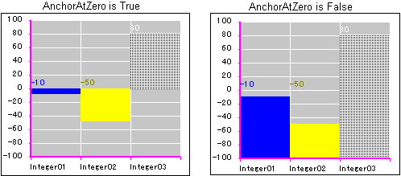
Example 2. If the minimum value is -110 and the maximum value is -10:
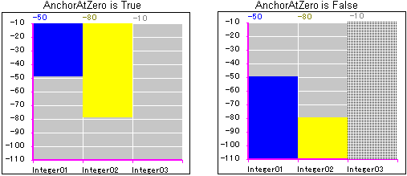